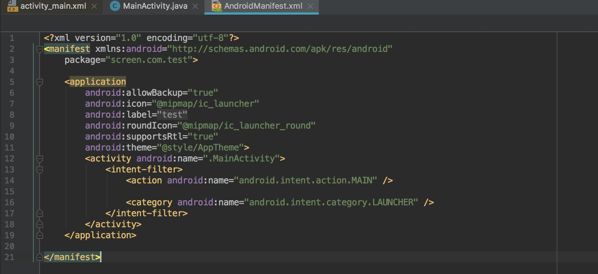
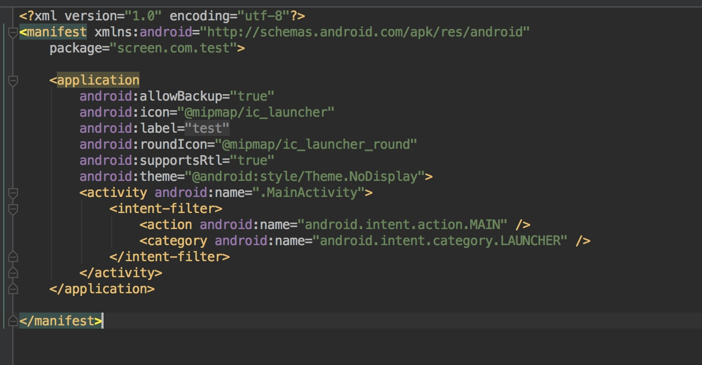
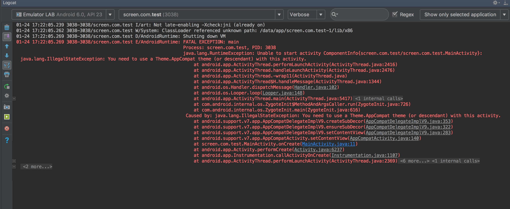
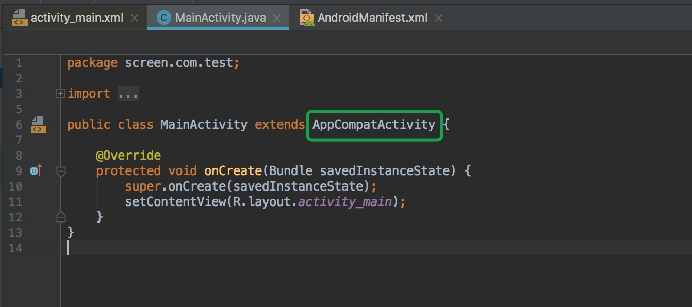
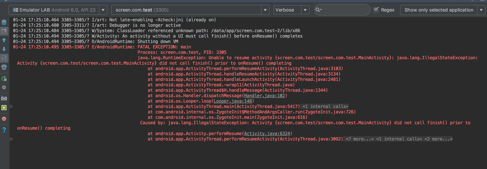
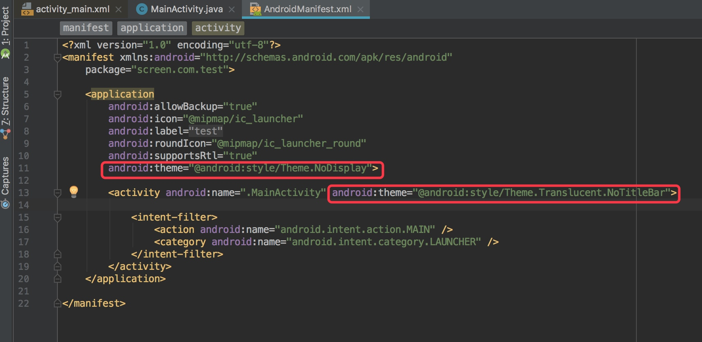
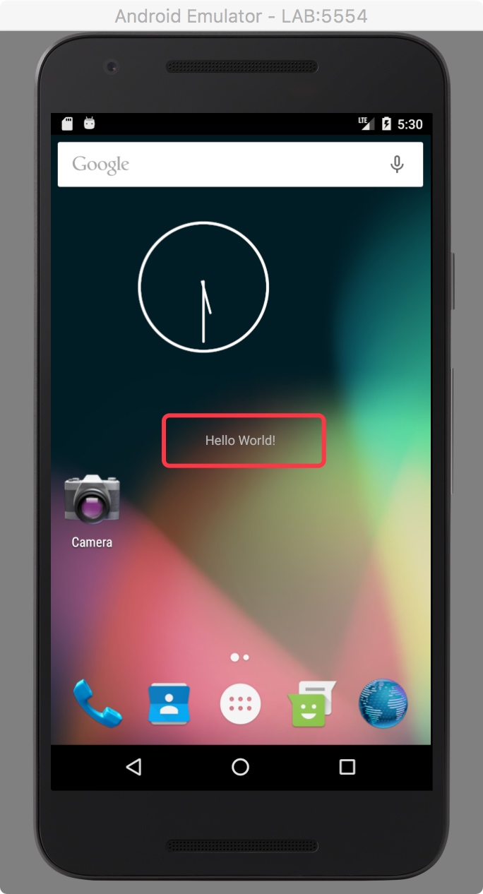

开发Android木马时，一定会有监听开机广播，然后自动启动我们的Activity，但是Activity的页面又不能被用户看到，所以需要隐藏Activity，这里需要用到Android的theme来实现。
0x00 AndroidManifest.xml
在AndroidManifest.xml文件中，修改theme属性为@android:style/Theme.NoDisplay
正确使用方式：
<application android:label="Kill" android:theme="@android:style/Theme.NoDisplay">
</application>
你要隐藏的页面Activity也要改一下透明主题：
<activity android:name=".MainActivity" android:theme="@android:style/Theme.Translucent.NoTitleBar" >
</activity>
0x01 常见错误处理
我在Android6.0版本的模拟器中实验发现并没有找到Theme.NoDisplay这个主题，原来是因为我没有修改前缀，要注意前缀是：@android:style/xxx开头的，不然可能会提示没有Theme.NoDisplay这个主题。
默认新建的App文件中是这样的

修改Application的Theme为透明主题后

安装到模拟器上测试，直接报错：

错误原因：
Caused by: java.lang.IllegalStateException: You need to use a Theme.AppCompat theme (or descendant) with this activity.
解决方法：
由于我们创建应用的时候勾选了使用兼容包，所以Activity默认集成自AppCompatActivity，只需要把它改成Activity就行了

修改后，再次安装并启动，又报了另一个错：

错误关键字：
did not call finish() prior to onResume() completing
解决：
在Activity的声明文件中添加一个透明的主题
android:theme="@android:style/Theme.Translucent.NoTitleBar"

效果图：
图中的helloworld就是MainActivity中的Text文本
